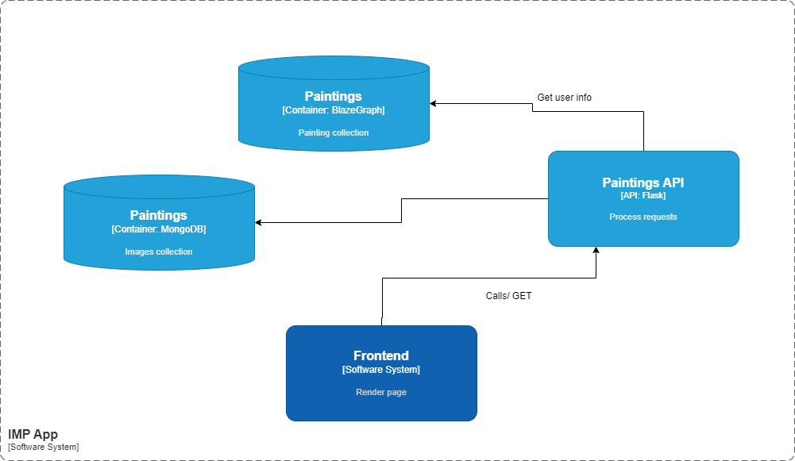

Table of Contents
Introduction
Our project aims to create a comprehensive and interactive database of painters and portraits from a Kaggle dataset of images. In this report, we will walk you through our data processing steps, which involve using the DeepFace library and the Wikipedia API to enrich our data with various features and information. We will also discuss how we store our data in a JSON LD format and how we make it accessible through API endpoints. Furthermore, we will showcase our frontend features, such as the gallery view, the painter page, and the correlation graph, which provide our users with a visual and engaging way to explore and interact with our data. Additionally, we will introduce our upload image feature, which allows our users to contribute with new portraits and increase our data diversity.
Architecture
The application consists of multiple components including a frontend part in Angular, an ASP.NET Core server and Flask. The project includes a user service that manages the authentication, as well as data management services: painting and painters. This modules are designed as microservices and all the information is stored in MongoDB Atlas.
General
The application follows a very simple architecture. The user makes actions in the interface and an API is called. An API Gateway manages the call from the other APIs
External Data Sources
For the main purpose of our application we required a dataset of portrait pictures. The dataset we chose from Kaggle consists of Portrait Paintings the publisher scrapped from WikiArt, specifically from 1850 to 1950 under the category of Portraits and Self-Portraits. The images contain either one or multiple people, standing in different lighting conditions, or at different angles from the point of view of the artist. These factors will influence the usability of each image in combination with another external data source, the DeepFace library.
DeepFace is a library in Python that generates data about portrait pictures. A lightweight face recognition and facial attribute analysis framework for python. It is a hybrid face recognition framework wrapping state-of-the-art models, such as VGG-Face, Google FaceNet, OpenFace, Facebook DeepFace, Deep ID, ArcFace, Dlib and SFace. Experiments show that human beings have 97.53% accuracy on facial recognition tasks. From all the available modules, we used the Facial Attribute Analysis which includes: age, gender, facial expression / emotion (anger, fear, neutral, sadness, disgust, happiness, surprise) and race (asian, white, middle eastern, indian, latino and black) predictions.
Wikipedia API provides cacheable and straightforward access to Wikimedia content and data, in machine-readable formats. The Global Rules state that we should limit the client to no more than 200 requests to the API. We will be using the API to get information about each painter in the database. The entity painter will have the years the artist was alive, the nationality or birthplace and which artistic current it followed in their artwork, as well as a brief description about it. Since the limit is of 200 requests, we will choose among the 356 artists only half of them in a random manner.
Data Structures / Models
Structure of the database is made of two main entities: Painters and Paintings. Another entity would be the user that will require some form of authentication in order to get the privilege of uploading portraits and contributing to the dataset.
The main format of our data is JSON. This is the reason why we chose MongoDB as our database system. As previously stated, our main concern is the two main entities: Painters and Paintings. Each will become a collection of data:
Each document in the Paintings collection will represent a single painting. The document will contain fields for: the image itself, the name of the painter, and from DeepFace detection: the age, gender, race, and emotion. Following the JSON LD encoding specifications, we will also include “@context” and “@type” for each painting stating the context of our data - schema.org - and VisualArtwork for defining the type of data, respectively.
The Painters collection contains the representations of each painter. The document includes the following fields: the painter's name, the information from the Wikipedia API (such as the art current, years they were alive, and a short description). For “@context”, we will include schema.org and follow the vocabulary guidelines presented for description, art current, birth and death date. For “@type”, since we are referring to a person, it will remain Person.
The Paintings and Painters data models are at the base of our application. In order to expose more functionalities and data about our paintings, we will include some Correlation Graphs for each painter to document their artistic choices. The correlations will be between the ages and emotions of the people portrayed and the gender and emotions. We are hopeful to find interesting associations or preferences of the painters.
In order to manage the data within our project, we have made use of the following main models which are aligned to the project's needs
Ontology
We build an ontology in RDF (Resource Description Framework) format with RDF Schema (RDFS) constructs, that defines classes and properties related to painters and portraits. First, we generated a schematic using an online tool for a better perspective.
The created ontology models information related to painters and portraits in the field of art. It defines classes to represent the painter and portrait entities, along with properties to describe various aspects of these entities, such as names, descriptions, lifetimes, genders, races, ages, emotions, and relationships between them.
Ontology classes
- Painter: Represents individuals who create artefacts. This class encapsulates the attributes and relationships associated with painters.
- Portrait: Represents a certain type of art artifact. The portraits have attributes and relationships that were extracted using DeepFace and are related to the person in the portrait (ex: gender, race, age)
The ontology described above serves as the basis for structuring and organizing the dataset into a BlazeGraph database. Each entity and its attributes are represented according to the classes and properties defined in the ontology. These statements adhere to the schema of the ontology, with subjects, predicates, and objects corresponding to specific entities, properties, and values as defined in the ontology.
Using the capabilities of BlazeGraph, this structured dataset can be efficiently stored, queried and manipulated by our api.
Data Flow
In this section we will describe how our data is being processed from start to finish. The journey of our data starts from the Kaggle dataset. The dataset only includes the images with a filename of pattern: “artist_name_number.jpg”. From the filename we will extract the name of the painter for each portrait. Since this is the only data about each painting that we have, so far, we will enrich it by using DeepFace analyze feature to add age, gender, race and emotion of each of the people in the portrait. The object returned by this library call also includes the position of the face, which we do not believe to be relevant for our application, only for the painter-paintings selection for sizing down our database later on. All this data, plus “@context” and “@type” VisualArtwork will constitute the JSON LD files for our database.
After gathering all this data about our portraits, we move on to finding out more about our painters. To do so we will use Wikipedia API to search for a summary / description of the painter, the years it was alive and the art current they followed in their works. The “@type” for them is Person, and we add them to the painters collection of our Mongo database.
To be able to present all of our data, we will expose a few API endpoints from the backend of our application. We will then process the data in the frontend. Our users will be able to see a gallery view of some (or all) portraits, very similar to how the popular platform Pinterest looks like. Each painting will be clickable with a redirect to a page about the painter. The painter data on the page will be from the database and a correlation graph generated from querying the database.
We will also have an upload image feature. For this feature, we will ask the user to choose from our list of painters and contribute with a portrait image that we do not feature from them. After making sure the image provided is of extension .jpeg/.jpg/.png/.gif, we will transmit this image and the name of the painter to be saved in our database. When saving to our database, there will be a Python script activated that processes the image using the DeepFace library to retrieve age, gender, race and emotion of the people in the uploaded image, in order to include this data in the JSON type file we will include in the database.
Use cases
Task flows
Login/Register
In order for the user to have access to our web application, it is mandatory to create an account first. This will be done with our custom login/register or we are considering allowing authentication using a service like Google, to make the process easier for users. The Authentication Service is designed to be secure for users by implementing a method of storing and validating user credentials. For this reason, the password will be saved after is proccessed using an ecryption method, that involves a combination of hash and salt
General user acccess
The user cam perform the following actions:
- Updating their personal profile.
- Deleting their profile
- Uploading a new image for existing painters
- View image gallery and filter the date acording to his preferences
- Visualizing the painter information page
Home/Gallery
On this page we will have a gallery of portraits from different painter. The user will be able to apply filters like: gender, painter and serch for images
Painter page
The user can access thihs page by clicking on an image from the gallery. Here we will present some information abou the artist and some other paintings. The page allows the user to know information about the artist such as his artistic current and to discover other works of art.
Upload
The upload page lets the user contribute to our paintings collection. The user will be able to upload a new painting from a painter we already have in our database, so we can have multiple recommendations
User Profile
The user will be able to view his profile, make changes and even delete his account
Conformance to Linked Data Principles
The main idea behind Linked Data is to connect related data across different sources- Use URIs as names for things: In our application, each entity is stored in the database having an unique identifier. This identifier can be used to make a Get call after this id and get the data about it in a JSON format.
- Use HTTP URIs so that people can look up those names: The URIs in our application are accessible over HTTP. Users can dereference these URIs to access more information about the paintings and painters.
- When someone looks up a URI, provide useful information: Following standard formats for data representation, Resource Description Framework, for representing the data in the SPARQL endpoints, enables us to respect the Linked Data principles
- Include links to other URIs. so that they can discover more things. Each painting allows the user to click on it. This action is a way for users to navigate from one piece of data (the image) to another (about the painter), discovering new resources along the way.
- Inclusion of External Data: Our application includes data from external sources, such as the DeepFace library, a Kaggle dataset with portraits, and the Wikipedia API. This allows our application to enrich its own data with data from other sources, providing a more comprehensive view of the paintings and painters.
Conformation to RDF model
The Resource Description Framework (RDF) is a standard model for data interchange on the Web. RDF has features that facilitate data merging even if the underlying schemas differ, and it specifically supports the evolution of schemas over time without requiring all the data consumers to be changed.
RDF extends the linking structure of the Web to use URIs to name the relationship between things as well as the two ends of the link (this is usually referred to as a “triple”). In our application, the data models for Paintings and Painters can be structured as triples, which is the standard format for RDF. Each triple consists of a subject, predicate, and object, which correspond to the painting or painter, the property, and the value of the property, respectively. Let's consider painting_id as the subject (Each painting will have an id). “@type”, image, painter, age, gender, race, and emotion are the predicates, and VisualArtwork,
Preliminary Considerations
The results from calling the analyze method also detail the exact position where the face is supposed to be. This way we also checked and found some issues among some paintings that are either too abstract or distorted and the face is not visible. The main reasons, we found so far, that contribute to the face detection failure are: objects over the face such as veils, unfinished or incomplete sketches, people in the background that are too small and distorted. To tackle this issue we will be eliminating these images in data preprocessing, when creating the database. Our painting entity will have the image and the attributes from deepface, and like so we will filter out these images.
Another issue we will take into consideration is the large dataset that will prove to be difficult to manage and freely deploy in a Cloud Platform. In this regard we will further investigate which of the Microsoft Azure Cloud, Google Cloud Platform and AWS provide the largest capacity of storing and processing data from the non relational MongoDB for free. Since we already question the free storing capacity of the 5734 paintings of the 356 painters in our dataset, we will most likely resort to either reducing the number of paintings per painter or reducing the number of painters. If we decide to keep all the painters and only have 2 paintings from each, it will mean that our data is not comprehensible enough to create the correlation graphs encapsulating relevant data. In this matter we will go forward choosing to reduce the number of painters. We will make sure that each painter has portraits that are face-detectable by DeepFace library and only count those when taking them into consideration.
Because we will also have a portrait image uploading feature, we have to make sure the data sent by our users is a picture only. Even if we do not believe people want to do harm to our project, we are taking into account the security of uploading images to our application. We will validate the file type in the upload process in the client-side using JavaScript to only have the .jpg, .jpeg, .png and .gif extensions.